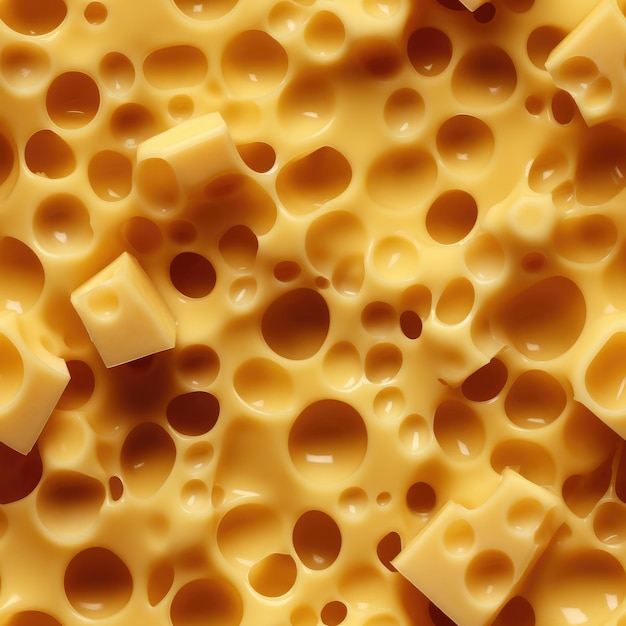

Inicio
Esta página web está dedicada exclusivamente a la cocina suiza, ofreciendo un espacio donde podrás descubrir los platos típicos más representativos del país.

Aquí encontrarás recetas detalladas, consejos culinarios y datos interesantes sobre los ingredientes y tradiciones gastronómicas de Suiza. Todo el contenido está disponible en español, pensado especialmente para quienes desean conocer y disfrutar de la riqueza culinaria suiza desde una perspectiva accesible y cercana.